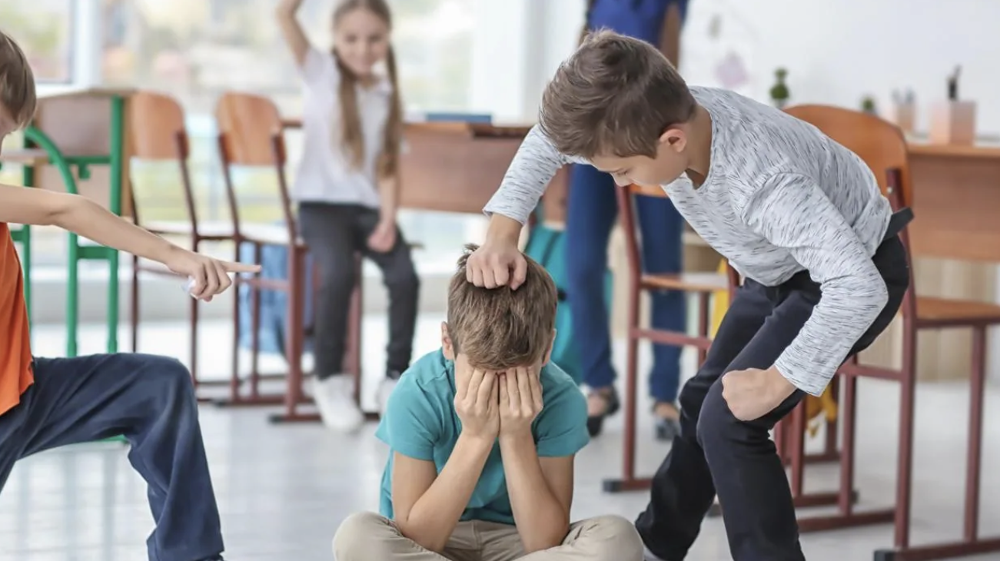
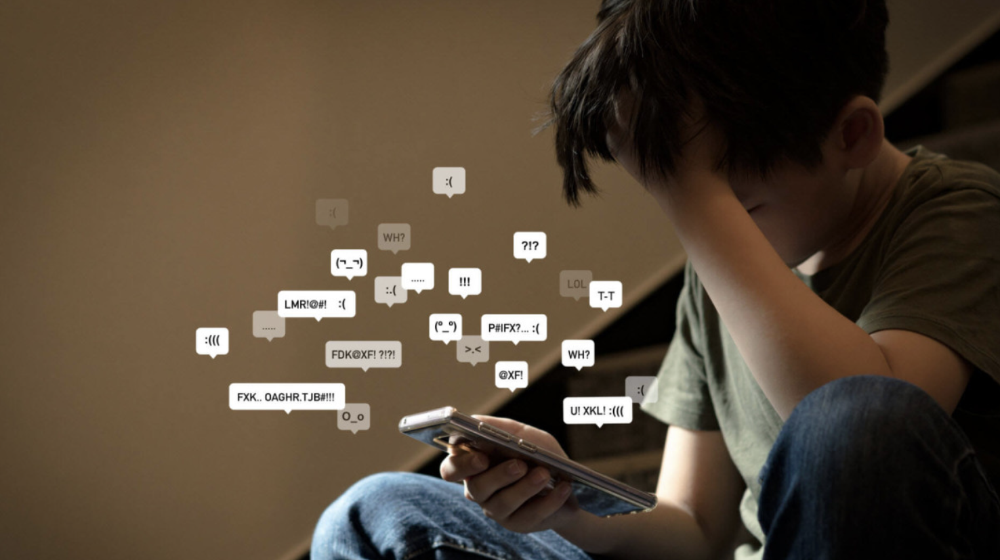
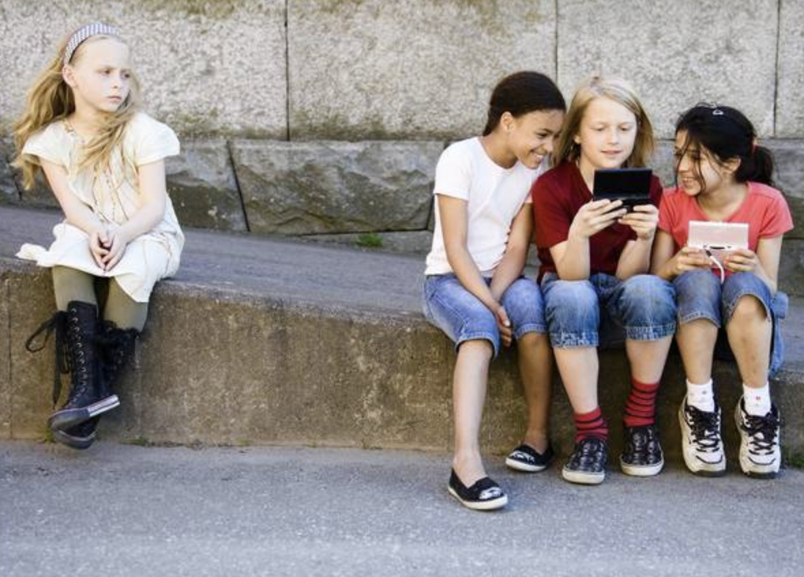

Bullying Físico
El bullying físico incluye golpes, empujones, patadas y cualquier forma de agresión corporal directa.
Bullying Verbal
Este tipo de acoso se basa en insultos, burlas, apodos ofensivos y amenazas para humillar a la víctima.
Ciberbullying
Este tipo de acoso utiliza medios digitales, como redes sociales, mensajes de texto y correos electrónicos, para intimidar o difundir contenido ofensivo.

Bullying Social
El bullying social incluye la exclusión, difusión de rumores y manipulación para aislar a una persona de un grupo.
